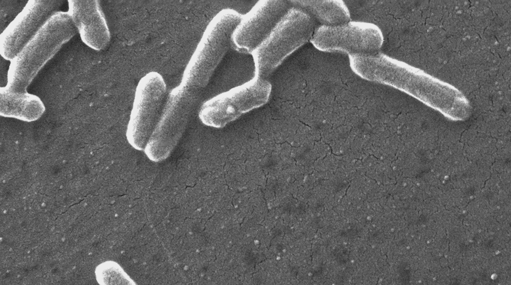

Why I am researching this
- interest in medicine
- studied the outbreak in a summer health class
- a few sick people changed the rules for millions
- it started in Washington State
How did the 1993 Jack in the Box E. coli outbreak, which started with children who were sick in Washington state, cause the government to change how ground beef is regulated, and what changed in how fast food is made and inspected after this incident?
A six-chapter evidence investigation
How one E. coli outbreak changed American food safety
January 1993. Washington State. A hamburger. And a chain of decisions that changed how America regulates ground beef.
The question How did the 1993 Jack in the Box E. coli outbreak, which started with children who were sick in Washington state, cause the government to change how ground beef is regulated, and what changed in how fast food is made and inspected after this incident?

Student introduction · research framing
The hamburger is one of the most consumed foods in America, and some argue it deserves the title of our national food. So it is hard to imagine one of them making hundreds of people sick, which is exactly what happened in January 1993. People who ate at Jack in the Box restaurants became extremely sick, and many of them were children. Health officials found that the cause was E. coli O157:H7, a bacterium that had been known as a food danger for only about ten years. In 1996 the U.S. Department of Agriculture issued the Pathogen Reduction / HACCP rule, which made meat companies more responsible for keeping their food safe.
Some historians say the outbreak is the reason the rules changed in the first place. Other researchers say the meat industry had grown in a way that made an outbreak like this bound to happen, and that the new rules still have problems whose consequences we face today. I want to find out how much of the change the outbreak really explains, and what stayed the same after it. It also matters to me that this started in Washington, where all of us are from.
Why I am researching this
What I expect to find
The outbreak was a big reason but not the only one. Scientists, consumer groups and the growth of the meat industry also pushed. Some things did not change, because outbreaks continued.
What I need to know
Research status remains open where the record is incomplete.
Outbreak timeline and how officials traced it.
Partly answered (CDC reports); WA Department of Health records not yet found.What the government changed 1993–1996 and who pushed for it.
Partly answered; public-pressure evidence is thin.How restaurants changed cooking and handling, and whether outbreaks fell.
Partly answered; no restaurant company records yet.Whether the outbreak caused the changes or only came before them.
Weighed, not settled.This website began as my Real History Project proposal. The proposal set the research question, the four academic sources in my literature review, and the aims above. It also set the format: instead of a slideshow, I proposed a website called Follow the Patty, where the class acts as health investigators, looks at evidence cards, and decides what made the law change before I give my conclusion.
A website made sense because this is an individual project and there is not time for everyone to present in class. A website lets classmates explore the evidence on their own, before and after my presentation, and it can grow as I find more sources.
My 5-minute presentation plan: hook, the outbreak, cause and effect, then and now, conclusion, then questions
Presentation Mode, which follows the same timeline“A clickable chain from the outbreak to the 1996 rules, with an evidence card and a strength rating for each step”
Follow the chain and the evidence board“A menu board and the question ‘Why is your burger cooked the way it is?’”
The opening question on this pageMy literature review of four sources and their limitations
Historians and sourcesThe four things I needed to know
The chapters of the investigationThe labels describe what kind of claim is being made—not whether a reader has to agree.
Supported by a primary or authoritative source.
An argument by a named researcher.
A reasonable conclusion drawn from several pieces of evidence.
The available evidence cannot settle it.